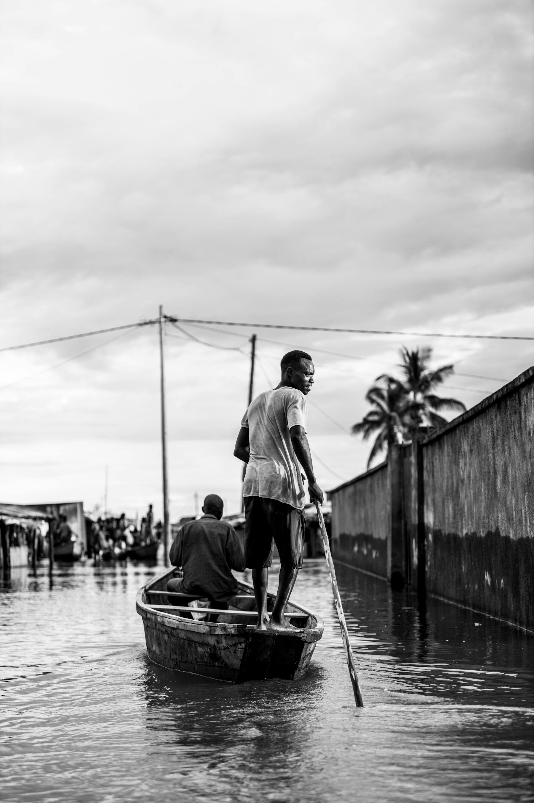
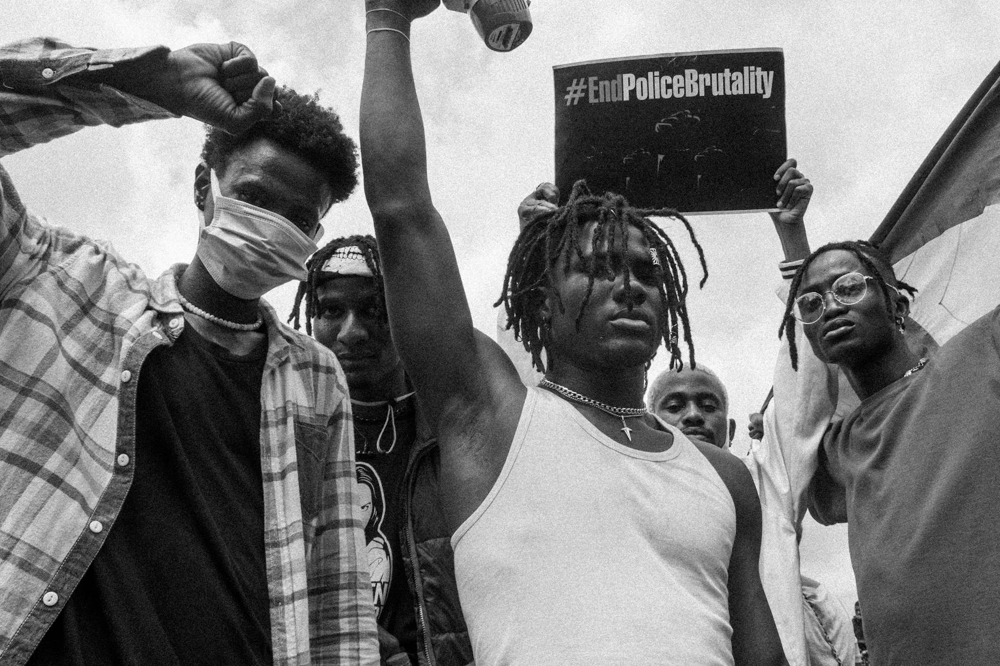

Nairobi / Est. 2024 / Independent
Kenyan stories with editorial nerve.
Cinq is a Nairobi multimedia desk for the stories that matter in public life: the health system that keeps failing, the market that never lies about inflation, the flood victims the cameras left behind. We produce journalism that is finished, sourced, and ready to publish. Wacha mchezo.
Cinq Desk
SHA hospitals rejecting cards: patients left at the gate, again
June 25 anniversary: a year since Gen Z stormed parliament and Kenya changed
Unga ya dona inapanda: the maize flour index Kenyans track every week
Mathare River: the community still waiting for the embankment that was approved
Femicide toll 2024: 97 women. One year. Zero convictions.
Story Desk
Real Kenyan stories, filed from the ground up.
Three live story lanes, updated with reported copy, community voices, credit-cleared photography, and field video. This is not a content feed. It is an editorial system built around public-interest journalism that has to be true before it can be published.

Climate
Kamuchiri woke up to mud. The government woke up three weeks later.
On the night of April 29, 2024, a landslide buried Kamuchiri near Mai Mahiu. Cinq spent two weeks on the ground tracking where the aid went, who it missed, and what disaster response means when the cameras move on.
Production Desk
Choose the format. We build the package.
From a WhatsApp voice note in Kibera to a finished podcast episode. From a blurry protest photo to a captioned photo essay with rights cleared. Each desk can operate alone or combine into a full multimedia campaign.
Cinq Investigates
Follow the money. Find the document. Name the official.
- Research, FOIA requests, and source development
- Field reporting and verification
- Document timelines and data visualisation
Cinq Podcasts
Kenyan voices deserve more than a three-minute radio slot.
- Story architecture and episode scripting
- Field recording and studio production
- Full transcripts, clips, and distribution assets
Cinq Shorts
Short-form video that does not waste 10 seconds of anyone's life.
- Vertical and horizontal cuts for all platforms
- Motion graphics and animated data
- Subtitles in English and Kiswahili
Cinq Photography
Every image is a second story running parallel to the text.
- Assignment direction and location scouting
- Documentary and news photography
- Retouched, captioned, and credit-cleared selects
Publishing System
Every story carries a timestamp, a source trail, and a media plan.
The era of undated articles and unnamed sources is over. Every piece published through Cinq ships with a file date, an update log, photo credits, and a source classification: on record, background, or confirmed document.
Story fileJSON
TimestampEAT
Image creditTagged
Last updatedLive
Latest
Newest briefs rise to the top.
The feed re-ranks on every update. A brief filed at 6am becomes a full report by 6pm. The timestamp shows exactly where in the process each story sits. Kaa rada.

Civic Desk
One year since parliament was stormed. What changed? What didn't.
On June 25, 2024, a generation Kenya's political class had written off as apolitical changed the terms of civic participation.
Read briefReady When The Story Is
Tell us what you are making. We will shape the production plan.
Send a brief, a headline, or just a topic and a deadline. We will come back with a structure, a team, and a price. No retainer required for a first conversation.